조경기사 (2004-05-23 기출문제)
1과목: 조경사
1. 다음은 스페인의 무어양식의 정원에 관한 설명으로 잘못된 것은?
- 중세기 말에 스페인사람들에 의하여 만들어진 회교 정원양식이다.
- 특징적인 뜰 공간은 파티오(patio)이다.
- 당시의 기독교의 수도원 정원에 비하여 보다 호화롭고 개방적이다.
- 인도의 무갈양식에도 커다란 영향을 주었다.
(정답률: 37%)

2. 영국 풍경식 정원의 3대 거장(巨匠)에 속하지 않는 것은?
- William Kent
- Jean Jacque Rousseau
- Lancelot Brown
- Humphrey Repton
(정답률: 86%)
3. 암흑시대라 불리우는 중세(中世)의 초기(初期)에 정원이 발달한 곳은?
- 궁전
- 왕이나 귀족의 별장
- 수도원(修道院)
- 민가(民家)
(정답률: 83%)
4. 역사적으로 유명한 조경가와 그 작품으로 연결이 잘못된 것은?
- 미켈로조 미켈로지 - 메디치장
- 앙드레 르 노트르 - 보우 르 비콩트
- 옴스테드 - 리버사이드 단지
- 다우닝 - 스토우 가든
(정답률: 71%)
5. 다음 중 베티가(家)(House of vetti)의 설명으로 맞지 않는 것은?
- 중세 로마에 있었던 별장이었다.
- 아트리움(Atrium)과 페리스틸움(Peristylium)을 갖추고 있다.
- 실내공간과 실외공간이 거의 구분되어 있지 않다.
- 실내공간이 거의 노천식 공간이었다.
(정답률: 25%)
6. 일본 모모야마(桃山)시대의 다정원(茶庭園)은 '와비' 와 '사비'의 개념으로 완성되었다는데 이 정원을 설명한 사항 중 가장 거리가 먼 것은?
- 인간생활의 부족함을 초월하여 정원에서 미를 찾으려고 하였다.
- 이끼가 끼어 있는 정원석에서 고담과 한적함을 느끼는 개념이다.
- 상징주의적보다는 자연속에 한 부분으로 대자연 전체의 분위기를 느끼려는 개념이다.
- 서원조 정원과 유사한 화려한 개념이다.
(정답률: 65%)
7. 일본의 축경식(縮景式)정원에 관한 특징을 기술한 것 중 옳지 않은 것은?
- 에도(江戶)시대 후기에 형성된 조경양식이다.
- 자연풍경미를 한눈에 볼 수 있도록 묘사해서 만든다.
- 원근(遠近), 색채, 명암, 조화를 잘 활용해야 한다.
- 항상 조화(harmony)보다는 대비(contrast)에 중점을 둔다.
(정답률: 65%)
8. 중국에서 신선사상(神仙思想)이 담겨진 정원이 최초로 꾸며진 시대는 어느 시대인가?
- 주나라 때
- 한나라 때
- 당나라 때
- 송나라 때
(정답률: 77%)
9. 동사강목(東史綱目)에 "궁성의 남쪽에 연못을 파고 20여리에서 물을 이끌어 들이고 사방의 언덕에 버드나무를 심고, 못 속에 섬을 만들어 방장선산을 모방하였다" 라고 궁남지(宮南池)에 대하여 기록하고 있는데 이는 어느 나라 어느 왕 때 조성한 것인가?
- 백제의 진사왕
- 백제의 무왕
- 신라의 경덕왕
- 신라의 문무왕
(정답률: 79%)
10. 조선시대 궁궐의 침전(寢殿) 후정(后庭)에서 볼 수 있는 대표적인 인공 시설물은?
- 조그만 크기의 방지(方池)
- 화담
- 경사지를 이용해서 만든 계단식의 노단(露壇)
- 정자(亭子)
(정답률: 65%)
11. 이태리 노단식 정원에서 건물의 위치가 제일 낮은 곳, 중간, 제일 높은 곳의 순으로 된 것은?
- 카스텔로 - 란테 - 에스테
- 란테 - 에스테 - 카스텔로
- 에스테 - 카스텔로 - 란테
- 카스텔로 - 에스테 - 란테
(정답률: 57%)
12. 전통 정원에서 음양오행과 주역사상에 의한 장식을 외부 공간에 많이 사용하였는데 화마를 제압하는 능력의 벽사 장식으로 생각할 수 있는 것은?
- 연경당 입구의 두꺼비
- 경복궁 근정전 남쪽 영제교에 해치 네마리
- 경복궁 아미산 굴뚝에 해치와 불가사리
- 망새기와의 도깨비 문양
(정답률: 67%)
13. 역대 중국정원은 지방에 따라 많은 명원(名園)을 볼 수있다. 그중 소주(蘇州)에는 ( 림 )등이 있고, 북경(北京)에는 ( 립 )등이 있다. 윗글의 ( 림 )과 ( 립 )에 해당하는 것은?
- 림유원(留園) 립졸정원(拙政園)
- 림자금성(紫禁城) 립원명원 이궁(園明園離宮)
- 림졸정원(拙政園) 립원명원 이궁(園明園離宮)
- 림만수산 이궁(萬壽山離宮) 립사자림(師子林)
(정답률: 84%)
14. 조선시대 민가정원(民家庭園)에 대한 설명 중 틀린 것은?
- 안채 뒤에는 자그마한 동산이나 화계(花階)로 꾸며 놓고 외부와 격리시켰다.
- 정심수를 뜰 한가운데 심었다.
- 택지안에 나무를 심을 때는 홍동백서의 이론을 적용 시켰다.
- 여유있는 집에서는 괴석이나 세심석 같은 점경물도 설치했다.
(정답률: 70%)
15. 모모야마(桃山)시대 싸리나무나 대나무 가지로 울타리를 두르고 소공간을 자연 그대로의 규모로 꾸민 정원 양식은?
- 정토정원
- 임천정원
- 다정
- 침전식정원
(정답률: 62%)
16. 다음 창덕궁 내에 있는 정자들로 이들 가운데에서 입지적(설치장소) 측면에서 성격이 다른 것은?
- 애련정
- 부용정
- 농숙정
- 관람정
(정답률: 53%)
17. 앙드레 르 노트르가 창안한 프랑스 고유의 정원 양식이 라고 할 수 있는 평면기하학식 정원이 아닌 것은?
- 프랑스 쁘띠트라이농(Petit Trianon)의 정원
- 독일의 뉨펜버어그(Nymphenburg)의 정원
- 오스트리아의 쉔브룬(Sch梗nbrunn) 성의 정원
- 오스트리아의 벨베데레(Belvedere)정원
(정답률: 62%)
18. 무굴왕조의 아크바르(Akbar)대제는 인도의 영토를 크게 확장하고 조경 및 토목사업에 치중하였다. 다음 중 아크바르 대제의 업적이 아닌 것은?
- 캐스미르 지방에 대단히 아름다운 정원인 니샤트바그(Nishat Bagh) 축조
- 다알호수 주변에 대정원인 니심바그(Nisim Bagh) 축조
- 국내에 가로수 식재와 우거진 도로 개설
- 캐스미르 지방에 Hari Pabat(녹색의 보루)를 건설
(정답률: 39%)
19. 중국 명나라때 계성의 원야(園冶) 원설(園說)에서 설명된 계절에 따른 경관을 경물(景物)로 차용하는 수법은 다음 중 어느 것인가?
- 인차(隣借)
- 부차(俯借)
- 앙차(仰借)
- 응시이차(應時而借)
(정답률: 19%)
20. 고려시대의 정원과 관련된 용어가 아닌 것은?
- 북원
- 원지
- 화원
- 후원
(정답률: 48%)
2과목: 조경계획
21. 자연공원의 용도지구 중 집단시설지구의 입지조건이 아닌 은?
- 공원 이용상에 있어서 교통의 요지
- 토지소유 관계, 이권 제한 관계 등이 계획적인 시설 정비에 알맞는 곳
- 각종 재해에 안전한 곳
- 자연보존 상태가 양호한 곳
(정답률: 58%)
22. 도보권 근린 공원에 대한 설명 중 맞는 것은?
- 이용자는 근린주구의 불특정 다수인이다.
- 설치할 수 있는 공원시설은 휴양시설, 유희시설, 운동시설, 교양시설, 편익시설, 조경시설 등이다.
- 전체적으로 식재지 면적은 부지면적의 50%에 이른다.
- 유치거리는 500m 이내가 적당하다.
(정답률: 23%)
23. 출입구가 2개 이상일 때 차로의 너비가 가장 큰 주차 형식은?
- 평행주차
- 직각주차
- 교차주차
- 60° 대향주차
(정답률: 55%)
24. 계획과 설계를 비교한 다음 서술 중 잘못된 것은?
- 계획은 분석에 더욱 깊이 관련된다.
- 설계는 문제의 해결에 더욱 관련된다.
- 계획은 프로젝트로부터 문제를 발견하고 해답을 찿는 과정에서 더욱 논리적이고 객관성 있게 접근한다.
- 설계는 프로젝트의 제한성과 기호성을 더욱 확실하게 한다.
(정답률: 32%)
25. 하천 고수 부지, 공공시설의 이전 적지, 기부 체납되는 공공용지, 개발제한구역 등은 어떤 유형의 공원 녹지 자원인가?
- 유사자원
- 유보자원
- 잠재자원
- 상충자원
(정답률: 20%)
26. 도시환경에 있어 형태(form)와 행위(activity)의 일치에 대한 연구를 하여 도시의 물리적 형태가 지닌 행위적 의미의 상호 관련성을 분석한 사람은 누구인가?
- 케빈 린치(Kevin Lynch)
- 칼 스타이니츠(Carl Steinitz)
- 로오렌스 할프린(Lawrence Halprin)
- 아버나티와 노우(Abernathy and Noe)
(정답률: 44%)
27. 1/25,000 축척의 지형도에서 계곡선(index contour)과 계곡선의 등고선 간격은?
- 25m
- 50m
- 75m
- 100m
(정답률: 53%)
28. 조경계획의 한 과정인 기본구상의 설명 중 잘못된 것은?
- 자료의 종합분석을 기초로 하고 프로그램에서 제시된 계획방향에 의거하여 구체적인 계획안의 개념을 정립 하는 과정이다.
- 추상적이며 계량적인 자료가 공간적형태로 전이되는 중간 과정이다.
- 자료분석 과정에서 제기된 포로젝트의 주요 문제점을 명확히 부각시키고 이에 대한 해결방안을 제시하는 과정이다.
- 서술적 또는 다이아그램으로 표현하는것은 의뢰인의 이해를 돕는데 바람직하지 못하다.
(정답률: 67%)
29. 현행 주차장법에 명시된 승용차 1대의 주차소요 공간 기준으로 가장 적합한 것은? (단 평행주차형식의 주차 단위구획이나 지체장애인의 전용주차장이 아닌 경우)
- 2.0 m x 6.0 m
- 3.0 m x 7.0 m
- 3.5 m x 7.0 m
- 2.3 m x 5.0 m
(정답률: 63%)
30. 기본계획에 포함되지 않는 것은?
- 토지 이용계획
- 단면 상세도
- 집행 및 관리계획
- 교통 동선계획
(정답률: 58%)
31. 주거단지 계획에서 저층 고밀 주거의 특성에 관한 설명 중 가장 옳은 것은?
- 건폐율이 낮기때문에 옥외 공간을 많이 확보할 수 있다.
- 접지형 주거 위주의 개발로 자연과 접하는 기회가 고층 고밀보다 많다.
- 고층보다 개발비가 휠씬 많이 든다.
- 일정면적에 고층 보다 휠씬 많은 세대수를 수용할 수 있다.
(정답률: 43%)
32. 공원녹지 관련법 체계가 상위법에서 하위법으로의 흐름으로 연결이 올바른 것은?
- 국토기본법 → 도시공원법 → 국토의계획및이용에 관한법률
- 도시공원법 → 국토의계획및이용에관한법률 → 국토기본법
- 국토의계획및이용에관한법률 → 국토기본법 → 도시공원법
- 국토기본법 → 국토의계획및이용에관한법률 → 도시공원법
(정답률: 44%)
33. 레크레이션 계획 모델 중 이용자 - 자원 모델에 관한 설명으로 적당하지 않은 내용은?
- 레크레이션 수요와 공급을 추정한다.
- 모든 토지와 수자원을 분석하여 자원형으로 구분 한다.
- 유사한 레크레이션 경험에 기초하여 이용자 집단을 구분한다.
- 이용자와 자원은 각각 상이한 개념이므로 직접 연관 지우지 않고 고려하려는 의도이다.
(정답률: 56%)
34. 도시 스카이라인 고려 요소가 아닌 것은?
- 하천의 형태 고려
- 구릉지 높이의 고려
- 조망점과의 관계 고려
- 고층 건물 클러스터 고려
(정답률: 64%)
35. 공장조경계획의 원칙이 아닌 것은?
- 식재계획은 공장의 차폐 및 엄폐와 같은 국지적 조경처리 방식을 도입한다.
- 공장의 성격과 입지적 특성에 따라 개성적인 식재 계획이 이루어져야 한다.
- 식재계획은 자연환경은 물론이고 주변의 지역적, 도시적 여건을 고려한 인문환경을 최대로 존중하고 운영관리적 측면을 배려한다.
- 식재계획시 녹화용 수목의 경우 이식이 용이하고 성장속도가 빠르며 병해충이 적으면서 관리가 쉬운 나무를 선택한다.
(정답률: 40%)
36. 리조트(resort)지역의 계획수립 방법에 있어 적합치 않은 것은?
- 다양하고 복잡한 유희시설을 확보하여 이용자의 흥미 를 유발시킨다.
- 옥외공간을 여유있게 확보하며, 접근성이 양호하도록 단지를 배치한다.
- 숙박, 상업시설 등 생활 써비스 시설을 편리한 지역에 설치한다.
- 체재시 흥미를 유발시킬 수 있는 자연경관이 입지한 곳에 설치한다.
(정답률: 44%)
37. 인간의 공간적 행태는 개인적 필요와 사회적 제약의 상호 작용의 결과로 초래된다고 주장하는 사회적 행태의 이론적 모델은?
- 프라이버시 모델
- 스트레스 모델
- 정보과잉 모델
- 2원적 모델
(정답률: 28%)
38. 국토의계획및이용에관한법률에서 시설로서 규정하는 광장의 종류로 합당하지 않는 것은?
- 교통광장
- 일반광장
- 지하광장
- 역전광장
(정답률: 12%)
39. 뉴먼(Newman)은 주거단지 계획에서 환경심리학적 연구를 응용하여 범죄발생율을 줄이고자 하였다. 뉴먼이 적용한 가장 중요한 개념은 다음 어느 것인가?
- 영역성(territoriality)
- 개인적 공간(personal space)
- 혼잡성(crowding)
- 프라이버시(privacy)
(정답률: 40%)
40. 건축법상 건축주는 용도지역 및 건축물의 규모와 건축 조례가 정하는 기준에 따라 대지안에 조경 기타 필요한 조치를 하여야 한다. 조경을 하여야 할 원칙적인 법정 최소 대지면적은?
- 120m2
- 165m2
- 200m2
- 255m2
(정답률: 45%)
3과목: 조경설계
41. 다음 구조재 마감 표시 방법 중 보통 벽돌의 도면 표시 방법은 어느 것인가?
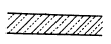
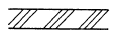
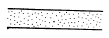
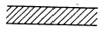
(정답률: 50%)
42. 다음 선긋기에 관한 내용 중 맞는 것은?
- 선긋기는 연필을 사용하되 inking으로 마무리해 두어야 한다.
- 선긋기는 원칙적으로 좌에서 우로, 아래에서 위로 긋는 것이 좋다.
- 교차하는 선은 교차하는 부분이 중복되지 않도록 세심한 주의를 요한다.
- 제도용 연필은 사용용지와 무관하게 항상 HB이상의 단단한 심의 연필을 사용한다.
(정답률: 56%)
43. 다음 중 환경 지각 이론 중에서 지원성(affordance)의 지각을 내용으로 하는 이론은?
- 형태 심리학
- 장(場)의 이론
- 확률적 이론
- 생태적 이론
(정답률: 32%)
44. 아래 그림은 경관 구성 원리 중 그 하나를 표시하려는 의도가 나타나 있다. 무엇을 의미하고 있는가?
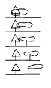
- 방향성(方向性)
- 기능성(機能性)
- 대비(對比)
- 반복(反復)
(정답률: 34%)
45. 다음 그림에서 시점(눈높이)은?
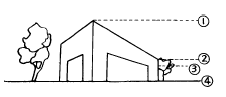
- ①
- ②
- ③
- ④
(정답률: 30%)
46. 조경시설 중 운동경기장 시설의 방향에 관한 다음의 설명 중 잘못된 것은?
- 계획 프로그램은 항상 대지여건에 우선하여 기본 계획에 적용된다.
- 축구장, 배구장 등 운동경기장은 코트의 장축을 남 - 북으로 설치한다.
- 게이트볼장은 경기장의 방향을 특별히 고려하지 않아도 좋다.
- 운동시설은 건축법에 따라 경기장의 방향을 설정하여야 한다.
(정답률: 32%)
47. 다음 중 굵은 직선을 통하여 느낄 수 있는 감성(感性)이 아닌 것은?
- 낭만적이다.
- 힘차다.
- 둔하다.
- 신중하다.
(정답률: 61%)
48. 경관 요소가 시각에 대한 상대적 강도에 따라 경관의 표현이 달라지는 것을 우세요소(dominance ele- ments)라 하는데 다음 중 맞는 것은?
- 대비, 연속, 축, 수렴
- 형태, 색채, 선, 질감
- 리듬, 반복, 대비, 연속
- 색채, 질감, 형태, 리듬
(정답률: 43%)
49. 다음 각도 중 운동감이 가장 강한 것은?
- 30°
- 45°
- 60°
- 90°
(정답률: 24%)
50. 40대의 승용차가 주차할 수 있는 주차장의 주차구획면적으로 옳은 것은? (단, 주차장법 규정 적용)
- 378m2 정도
- 460m2 정도
- 540m2 정도
- 792m2 정도
(정답률: 43%)
51. 휴지통의 배치 계획시 잘못된 사항은?
- 대형보다는 소형을 좁은 간격으로 배치한다.
- 배치하는 수량은 벤치 2 ~ 4개마다 한개씩 배치한다.
- 노폭이 넓을 경우에는 진행 방향의 좌측에 배치한다.
- 던지는 범위는 평균 반경 7m 정도가 바람직하다.
(정답률: 35%)
52. 자전거 도로의 종단경사로 바람직한 최대 경사도는?
- 3% 이내
- 5% 이내
- 7% 이내
- 9% 이내
(정답률: 22%)
53. 벤치의 인체공학적 특성에 관한 설명 중 틀린 것은?
- 가장 선호도가 높은 벤치의 등받이 각은 수평에서 1⑤° 내외이다.
- 벤치의 등받이 높이는 겨드랑이 높이보다 높아야 한다.
- 성인용(3인용 평벤치) 벤치의 바닥높이는 지면에서 25 ~ 30cm가 적당하다.
- 성인용(3인용 평벤치) 벤치의 바닥(좌판)폭은 40 ~ 60cm 정도가 적당하다.
(정답률: 50%)
54. 리튼(Litton)은 경관 유형별 시각적 훼손 가능성과 더불어 훼손 가능성과 관련된 일반적인 원칙을 제시한 바있다. 리튼이 제시한 일반적 원칙에 위배되는 내용은?
- 완경사보다는 급경사 지역이 훼손 가능성이 높다.
- 스카이라인, 능선등과 같은 모서리 혹은 경계 부분이 시각적훼손 가능성이 높다.
- 단순림보다 혼효림이 시각적훼손 가능성이 높다.
- 어두운 곳보다 밝은 곳이 시각적훼손 가능성이 높다.
(정답률: 40%)
55. 식물의 질감(texture)에 관한 기술로서 옳지 않은 것은?
- 커다란 잎은 거친질감과 다양성을 준다.
- 질감이 다른 나무를 인접배치하면 대개 부조화를 이룬다.
- 작은 잎은 부드럽고 미묘한 효과를 준다.
- 상록수는 잎의 수가 많고 밀생하여 견고한 질감 효과가 있다.
(정답률: 43%)
56. 유기적(有機的)인 선(線)이란?
- 손으로 그린 자유로운 선을 말한다.
- 기계로 자른 절단선을 말한다.
- 자로 그은 선을 말한다.
- 포물선을 말한다.
(정답률: 48%)
57. 경관의 예술미를 구성하는 요건으로 중요하지 않은 사항은?
- 특징적 경관의 구성(Charactistic landscape)
- 주위경관과의 유사성 배제(Deviation)
- 변화있는 경관(Variety)
- 정형식에 의한 단순미의 강조(Formal & simplicity)
(정답률: 48%)
58. 안내 표지시설에 관한 설명 중 틀린 것은?
- 관광지, 청소년시설, 휴양림 등의 설계공간에는 관련 법규에서 정한 내용에 따라 설계한다.
- 공원, 공동주택 등의 설계대상공간에 안내 등 정보 전달을 목적으로 설치하는 시설물을 말한다.
- CIP개념을 도입할 경우 교통수단을 대상으로 하는 경우라 하더라도 국제관례에 구애됨 없이 창작이 되도록 하여야 한다.
- 용도와 효용에 따라 유도 표지시설, 해설 표지시설, 종합안내 표지시설 등으로 구분하여 각각의 기능을 최대로 발휘할 수 있도록 설계한다.
(정답률: 53%)
59. 치수선 긋기에 대한 설명 중 가장 옳은 것은?
- 치수선은 그림에 방해가 되지 않게 1-2mm정도 띄어 긋는다.
- 치수선의 굵기는 0.2mm이하의 가는 실선으로 그려야 한다.
- 치수 보조선의 끝은 치수선을 넘어도 안되고 미달되어도 안된다.
- 치수선 양끝에 화살의 벌림각도는 45° 화살로 나타낸다.
(정답률: 30%)
60. 다음 생태복원에 관한 시방서의 내용으로 적합한 것은?
- 생태적 조건, 복구방안은 도면으로만 표시해야 한다.
- 식생 호안공사는 가급적 여름철 홍수가 끝난 직후가 좋다.
- 돌망태공법은 비교적 비탈이 심하고 급경사지역에 좋다.
- 등산로 식생복원은 현존식생도를 기반으로 잠재 식생을 복원한다.
(정답률: 11%)
4과목: 조경식재
61. 조각물을 더욱 돋보이게 하기 위한 배경식재에 가장 적합한 설명은?
- 큰 잎이 넓은 간격으로 소생하는 수종
- 작은 잎이 넓은 간격으로 소생하는 수종
- 작은 잎이 조밀하게 밀생하는 수종
- 잎의 크기나 간격과는 관계가 없다.
(정답률: 62%)
62. 다음은 자연풍경식 식재단위를 나타낸 배식도면이다. 각 번호에 해당되는 명칭이 틀리다고 생각되는 것은?
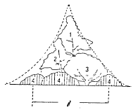
- 1 : 주목(진목)
- 2 : 부목
- 3 : 경관목
- 4 : 하층목
(정답률: 50%)
63. Cornus는 다음 어느 나무의 속명인가?
- 산수유나무
- 박태기나무
- 팽나무
- 서어나무
(정답률: 53%)
64. 조경식재도면의 식물 리스트 작성시 이용하기에 가장 편리한 순서라고 생각되는 곳은?
- 교목 - 관목 - 덩굴식물 - 화초의 순서
- 식물이름의 가, 나, 다 순서
- 학명의 A, B, C 순서
- 상록수 - 낙엽수 순서
(정답률: 59%)
65. 인위적으로 법면(法面)을 피복한 후 2차식생으로 들어 오는 식물 중 잘못된 것은?
- 칡
- 돌나물
- 싸리류
- 억새
(정답률: 34%)
66. 라운키에르의 생활형분류에 속하지 않는 것은?
- 양치식물(M)
- 다육식물(S)
- 지중식물(G)
- 수생식물(HH)
(정답률: 35%)
67. 수목 식재가 경관상 매우 중요한 위치일 때 사용되는 지주목 형태는?
- 단각형
- 삼각 및 사각지주
- 당김줄형
- 매몰형
(정답률: 64%)
68. 효과적인 교통통제를 위해 위요 공간의 경우 어떤 특징을 중요시해야 하는가?
- 폭
- 높이
- 색채
- 견고성
(정답률: 35%)
69. 다음 중 가을에 흰꽃이 피는 상록수로 짝지은 것은?
- 월계수, 동백나무, 아왜나무
- 차나무, 은목서, 팔손이나무
- 귀룽나무, 층층나무, 노각나무
- 황매화, 생강나무, 산수유
(정답률: 30%)
70. 열매가 코발트 색으로 아름다워 chinese beauty berry 라고 불리우며, 열매가 새의 먹이로도 좋은 낙엽관목의 수종은?
- Callicarpa dichotoma RAEUSCHEL
- Diospyros kaki THUNB.
- Kalopanax pictus NAK.
- Lagerstroemia indica L.
(정답률: 31%)
71. 가로수를 식재할 때 고려해야 할 사항은 여러가지가 있는데 다음 중 가로수 식재를 위해 고려할 사항으로서 가장 부적합한 사항은?
- 지하고(枝下高)를 고려한다.
- 수고(樹高)를 고려한다.
- 심근성(深根性)여부를 고려한다.
- 흉고직경(胸高直徑)을 고려한다.
(정답률: 40%)
72. 계곡부에 자생하는 목련류로서 꽃은 6월경에 밑을 향해 달리고 기초식재용, 교목류의 전면부 식재용으로 적당한 것은?
- Magnolia quinquepeta DANDY
- Magnolia heptapeta DANDY
- Magnolia sieboldii K. KOCH
- Magnolia grandiflora L.
(정답률: 53%)
73. 패치 가장자리의 생태적 특성을 설명할 수 있는 지표로 적합하지 않는 것은?
- 가장자리의 수직과 수평구조
- 가장자리의 폭
- 종 풍부도
- 색채의 다양성
(정답률: 45%)
74. 다음 중 습지를 좋아하는 식물로 짝지워진 것은?
- 팥배나무 - 느릅나무
- 왕버들 - 낙우송
- 참나무 - 소나무
- 팽나무 - 향나무
(정답률: 60%)
75. 주연효과(edge effect)와 관련이 없는 것은?
- 숲과 초원
- 해양과 육상
- 종수나 일부 종의 밀도가 다같이 인접한 군집보다 높음
- 양 군집의 인접부위로서 그 폭이 인접군집 보다 훨씬 넓음
(정답률: 34%)
76. 중앙분리대 식재방법 만으로 구성된 것은?
- 대칭식, 루버식, 평식식, 지표식
- 무늬식, 루버식, 정형식, 평식식
- 지표식, 무늬식, 군식식, 열식식
- 차폐식, 군식식, 정형식, 무늬식
(정답률: 15%)
77. 집단식재기법을 적용하여 배식함으로써 수관의 층화(stratification)를 형성하고자 한다. 상층 수관을 적절하게 형성할 수 있는 수종으로 짝지은 것은?
- 전나무, 주목
- 소나무, 정향나무
- 둥근측백, 가중나무
- 백합나무, 협죽도
(정답률: 15%)
78. 30m까지 자랄 수 있는 교목을 4m 높이를 가지는 주택 가까이 식재한다면 어떤 미적원리를 무시한 것이라고 생각하는가?
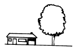
- 반복
- 균형
- 초점
- 비례
(정답률: 29%)
79. 가로수로 도로측방을 차폐하고자 한다. 수고가 5m, 수관직경이 3m 되는 칠엽수를 심어 운전자가 도로측방에 위치한 물체를 볼 수 없도록 하려면 식재 간격은 얼마로 하는 것이 좋은가?
- 6m
- 8m
- 10m
- 15m
(정답률: 32%)
80. 다음 중 잎의 형태가 옳지 않게 표시된 것은?
- 포플러 -

- 일본목련 -

- 백합나무 -

- 나한송 -

(정답률: 50%)
5과목: 조경시공구조학
81. 시공 중 발생하는 작업설부산물에 대한 설명으로 부적합 한 것은?
- 작업설부산물은 수량산출시 설계 당시에 미리 공제 한다.
- 발생량을 금액으로 환산하여 직접재료비에서 감한다
- 시멘트 공포대는 발생량의 90%를 공제한다.
- 강재 작업부산물은 발생량 전량을 공제한다.
(정답률: 17%)
82. 모멘트(moment)를 바르게 설명한 것은?
- 작용점과 방위와 방향을 말한다.
- 구조물에 하중이 작용할 때의 지점의 반력을 말한다.
- 힘의 한점에 대한 회전능률을 말한다.
- 힘의 압축력을 말한다.
(정답률: 43%)
83. 다음 보에 걸리는 휨 모멘트(bending moment)에 대한 그림의 해설로 올바른 것은?
- 보의 상부는 인장력, 하부는 압축력을 받으며, 부(-)의 힘으로 작용한다.
- 보의 상부는 인장력, 하부는 압축력을 받으며, 정(+)의 힘으로 작용한다.
- 보의 상부는 압축력, 하부는 인장력을 받으며, 정(+)의 힘으로 작용한다.
- 보의 상부는 압축력, 하부는 인장력을 받으며, 부(-)의 힘으로 작용한다.
(정답률: 38%)
84. 평탄한 지역에서 전지역의 배수가 균일하게 요구되는 곳에 주로 이용되는 심토층 배수방법은 어느 것인가?
- 어골형(herringbone type)
- 자연형(natural type)
- 선형(fan-shaped type)
- 차단형(intercepting system)
(정답률: 35%)
85. 도로 설계에서 속도의 기준을 정하는 일이 매우 중요하다 . 도로조건만으로 정한 최고속도로서 도로의 기하학적 측면의 기준이 되며 도로의 종류와 교통량에 따라 정하는 기준적인 속도를 무엇이라 하는가?
- 주행속도(Running Speed)
- 임계속도(Optimum Speed)
- 구간속도(Overall Speed)
- 설계속도(Desing Speed)
(정답률: 50%)
86. 다음 중 옹벽의 안정조건이 아닌 것은?
- 옹벽이 지반을 누르는 힘보다 지지력이 커서 기초가 부동침하에 대한 안정성이 있어야 한다.
- 활동에 대한 저항력은 수평력의 2배 이상이어야 한다.
- 저항력이 옹벽 뒷면의 토압에 대한 회전력의 1.5배 이상이어야 한다.
- 옹벽의 재료가 외력보다 강한 재료로 구성되어야 한다.
(정답률: 24%)
87. 등고선의 특성을 설명한 것 중 옳지 않은 것은?
- 같은 등고선상에 있는 모든 점은 같은 높이에 있다.
- 모든 등고선은 도면내에서만 폐합(廢合)한다.
- 등고선은 단애(斷崖)나 절벽이 아니고는 서로 만나지 않는다.
- 등고선의 간격은 급경사지에서는 좁고 완경사지에서는 넓다.
(정답률: 64%)
88. 다음 중 정정구조체(靜定構造體)의 수평부재(水平部材) 중 보의 지지방법에 관한 그림 중 캔틸레버보(cantilever beam)는 어느 것인가?
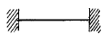
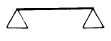
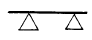
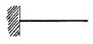
(정답률: 53%)
89. 표준형 벽돌(190 × 90 × 57)을 이용하여 1m2 쌓기 조적공사를 하려한다. 1.5B 쌓기 방식으로 1 m2 쌓을 때에 소요되는 벽돌의 양은 얼마인가?
- 75매
- 149매
- 224매
- 299매
(정답률: 40%)
90. 상수도(上水道)로 120L가 공급된다고 했을 때 살수관개용으로 사용할 수 있는 급수량은 어느 정도로 보는 것이 안전한가?
- 70L
- 85L
- 90L
- 120L
(정답률: 34%)
91. 조경 시공 계획상 고려해야 할 조달계획에 해당되지 않는 것은?
- 하청발주계획
- 노무계획
- 품질관리계획
- 재료계획
(정답률: 41%)
92. 콘크리트 타설시 슬럼프값의 저하를 적게할 목적으로 사용하는 혼화제는?
- AE제
- 감수제
- 포졸란
- 응결지연제
(정답률: 22%)
93. 다음 중 반력(reaction)의 설명으로 옳은 것은?
- 구조물에 외력이 작용할 때 하중과 평형을 유지하기 위한 힘.
- 힘의 한점에 대한 회전능률.
- 방향과 작용점만이 서로 다르고 힘의 크기와 방위가 같을 때의 힘.
- P 또는 W로 표시되며 W는 중력에 의한 것일 때 주로 쓰인다.
(정답률: 40%)
94. 부지의 직접 수준측량 시행에 대한 설명으로 맞지 않는 것은?
- 제일 먼저 고저기준점을 선정한 후 영구표식을 매설 한다.
- 1/1,200-1/2,400 사이의 적합한 축척을 결정한 후 수준측량을 시행한다.
- 수준측량의 내용은 부지 조건이나 설계자의 요구에 따라 달라질 수 있다.
- 일반적으로 부지 외부와 부지 내부의 주요지점과 부지의 전반적인 높이를 대상으로 측량한다.
(정답률: 28%)
95. 동일한 살수지관(撒水支管)에서 각 살수기에 작동하는 압력의 오차범위는 어느 정도에서 고려될 수 있는가?
- 동일 지관이므로 같아야 한다.
- 각 살수기 작동압력에 5% 이내로 한다.
- 각 살수기 작동압력에 10% 이내로 한다.
- 고려없이 면적에 따라 한지관에 얼마든지 설치할 수 있다.
(정답률: 32%)
96. 다음 그림은 어느 국립공원에 설치한 교량이다. 설명 중 옳은 것은?
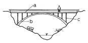
- 이 교량의 구조는 현수교이다.
- 주로 하중을 받는 부재는 b이다.
- c는 케이블로 만드는 것이 좋다.
- 반드시 철골구조로 만들어야 한다.
(정답률: 33%)
97. 목재를 섬유 방향과 평행으로 옆대어 붙이는 것을 무엇 이라 하는가?
- 쪽매
- 이음
- 맞춤
- 재춤
(정답률: 36%)
98. 지하실의 시공기준면을 195m로 절토를 한다면 절토량은 얼마인가? (단, 분할된 사각형은 정사각형이며, 한변의 길이는 5m 이다.)
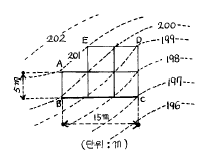
- 357m3
- 525m3
- 985m3
- 1575m3
(정답률: 37%)
99. 시방서에 대한 설명 중 잘못된 것은?
- 공사시행에 관련된 제반규정 및 요구사항.
- 공사 수량 산출서.
- 공사시행 관계 내용 기록 서류.
- 표준시방서와 특별시방서가 있음.
(정답률: 16%)
100. 원지반의 모래질흙 4,000m3, 점질토 3,000m3를 굴착하여 8ton 트럭으로 성토현장에 반입하고 다졌다. 다진 후의 성토량은 얼마인가? (단, 토량 변화율(C)는 모래질흙 0.88, 점질토 0.99 이다.)
- 649m3
- 6,490m3
- 650m3
- 6,500m3
(정답률: 50%)
6과목: 조경관리론
101. 다음 중 비선택성 제초제는?
- 이사디액제(이사디 아민염)
- 벤셀라이드유제(론파)
- 디캄바액제(반벨)
- 글라신액제(근사미)
(정답률: 24%)
102. 잔디의 양호한 생장을 위하여 필요한 토양의 최적공극율 (最適孔隙率)은 얼마인가?
- 22%
- 33%
- 44%
- 55%
(정답률: 42%)
103. 분수의 정기점검 보수사항은?
- 펌프 및 밸브의 교체
- 전기 및 기계의 조정점검
- 물교체, 낙엽제거 및 청소
- 파이프류의 도장
(정답률: 30%)
104. 옥외 레크레이션 관리체계의 3가지 기본 요소로만 구성되어 있는 것은?
- 이용자, 관리자. 부지의 설계
- 관리자, 자연자원기반, 요구도
- 자원, 관리자, 환경적 조건
- 관리, 이용자, 자연자원기반
(정답률: 55%)
1⑤. 원하는 자리에 새로운 가지를 나오게 하거나 꽃눈을 형성시키기 위하여 이른 봄에 실시하는 작업은?
- 단근(斷根)
- 아상(芽傷)
- 적아(摘芽)
- 적심(摘芯)
(정답률: 24%)
106. 공정관리의 기본적인 기능은 계획기능과 통제기능으로 나눌 수 있다. 다음 중 통제기능이 아닌 것은 무엇인가?
- 진도관리 - 공정진척의 계획과 실시와의 비교
- 사용계획 - 재료, 노무, 기계설비, 자금 등의 소요시기, 품목, 수량 및 수송
- 조달관리 - 재료, 노동력, 기계 자금 등의 조달
- 시정조치 - 작업내용의 개선, 공정진척, 계획의 재검토 등
(정답률: 50%)
107. 레크레이션 시설의 서비스 관리를 위해서는 제한 인자들 에 대한 이해가 필요하며 그것들을 극복할 수 있어야만 한다. 다음 중 그 제한인자에 속하지 않는 것은?
- 특별 서비스
- 관련법규
- 이용자 태도
- 관리자의 목표
(정답률: 41%)
108. 자연공원지역에서 발생하는 쓰레기의 특성이 아닌 것은?
- 기동력에 의한 처리가 어려우므로 비능률적이다.
- 폭넓게 산재하며, 수집 처리하기 곤란한 지역에 대량 발생한다.
- 쓰레기통 설치가 어렵고, 처리에 관한 법규가 확실치 않다.
- 음식찌꺼기, 깡통 등 소각이 어려운 것이 많다 .
(정답률: 63%)
109. 공원 녹지에서 병해충 발생에 대한 방제계획을 적은것 이다. 다음 중 농약 사용기준에 가장 적합한 것은?
- 미적, 경제적으로 허용하는 한도이하로 피해를 억제하는 정도에서 사용한다.
- 가능한한 농약을 사용하여 피해를 일으키는 해충을 절멸 시킨다.
- 농약을 사용치 않는 대신 천적을 이용하는 정도로만 한다.
- 동일 농약을 계속 사용하여 병해충을 방제하고 부작용을 없앤다.
(정답률: 53%)
110. 식물 관리비의 적산에 맞는 계산식은?
- 식물수량 × 년간생장율 × 작업연인원 × 작업단가
- 식물수량 × 작업인원 × 작업단가
- 식물수량 × 작업율 × 작업회수 × 작업단가
- 식물수량 × 작업연인원 × 작업회수 × 작업단가
(정답률: 45%)
111. 목재 공작물의 점검시 유의하여야 할 항목과 가장 관련이 적은 것은?
- 이용 목적
- 부재(部材)의 절단
- 도장(塗裝)상태
- 부재(部材)의 부식
(정답률: 48%)
112. 다음의 표현은 어느 양분의 결핍현상인가?
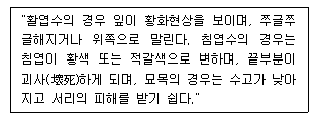
- N
- P
- K
- Ca
(정답률: 17%)
113. 다음 중 지하배수시설 유지관리에 적합하지 않는 것은?
- 지하배수시설 도면은 별도로 만들어 놓는다.
- 지하배수시설은 유출구가 항상 점검의 대상이 된다.
- 재설치시는 기존 위치에 설치하는 것이 항상 경제적 이다.
- 배수 유출구는 항상 그 기능을 다하도록 주의 한다.
(정답률: 45%)
114. 일반적으로 년간 유지관리계획에 포함시키는 것은?
- 공원지역내의 순찰계획
- 건물의 갱신계획
- 수목의 전정, 잔디관리계획
- 건물 도색계획
(정답률: 67%)
115. 콘크리트포장의 보수공법 가운데 포장의 파손이 심하여 보수가 불가능하다고 판단될 때 사용하는 방법은?
- 덧씌우기(overlay)
- 꺼진 곳 메우기
- 패칭(patching)
- 포장 슬래브 들어올리기
(정답률: 45%)
116. 솔나방의 월동 형태는?
- 나방
- 애벌레
- 알
- 번데기
(정답률: 34%)
117. 조경수목의 생장을 저해하는 충해를 방지하기 위한 방제법으로 거리가 먼 것은?
- 강력한 살균제를 년 3-4회 살포한다.
- 필요한 천적을 증식 살포한다.
- 유아등을 설치하여 성충을 유인하여 잡는다.
- 잠복소를 설치하여 해충을 유인하여 잡는다.
(정답률: 43%)
118. 수목의 공해피해(公害被害)가 아닌 것은?
- 낙엽
- 반문(斑紋)
- 천공(穿孔)
- 표백(漂白)
(정답률: 60%)
119. 조경공사에 있어서 공기를 단축시키면 직접비와 간접비에 어떠한 영향을 미치는가?
- 직접비와 간접비가 모두 올라간다.
- 직접비와 간접비가 모두 내려간다.
- 직접비는 다소 내려가지만 간접비는 올라간다.
- 직접비는 다소 올라가지만 간접비는 내려간다.
(정답률: 33%)
120. 조경시설물의 운영관리방법은 직영방식과 도급방식이 있는데 도급방식의 장점인 것은?
- 긴급한 대응이 가능함
- 이용자에게 양질의 서비스가 가능함
- 관리자의 취지가 확실히 나타날 수 있음
- 전문가를 합리적으로 이용할 수 있음
(정답률: 54%)